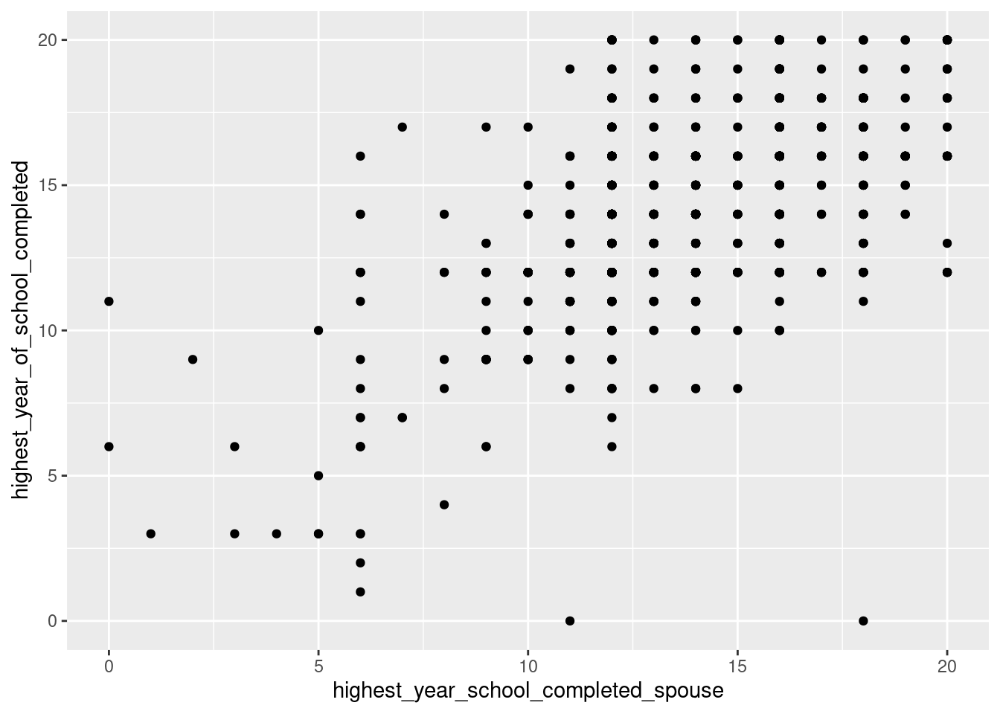

# Install if needed
#install.packages("Lock5Data")
#install.packages("infer")
# Load
library(Lock5Data)
library(tidyverse)
library(infer)Correlation and Linear regression pre-lab
https://github.com/tidy-MN/R-camp-penguins/raw/main/content/page/videos/day6/stat220_regression_prelab.qmd
Setup and packages
We use three packages in this course: Lock5Data, tidyverse and infer. To load a package, you use the library() function, wrapped around the name of a package. I’ve put the code to load one package into the chunk below. Add the other two you need.
Load the data
Let’s load the example dataset I have for this course, GSS_clean.csv. It should be inside the data folder in your RStudio Cloud. We’ll use the read_csv() function to read in the data.
GSS <- read_csv("https://tidy-mn.github.io/R-camp-penguins/data/GSS_clean.csv")Rows: 2348 Columns: 45
── Column specification ────────────────────────────────────────────────────────
Delimiter: ","
chr (34): number_of_children, age_of_respondent, college_major_1, college_ma...
dbl (11): respondent_id_number, highest_year_of_school_completed, highest_ye...
ℹ Use `spec()` to retrieve the full column specification for this data.
ℹ Specify the column types or set `show_col_types = FALSE` to quiet this message.Data visualization for two quantitative variables
Our main data visualization for two quantitative variables is a scatterplot.
To make our visualization, we will use the ggplot() function, with our data inside, and then use a + to add on a geom_ to tell R what kind of plot we want. In this case, we want a geom_point() to make a scatterplot. Inside the geom_ function, we use the aes() function and tell R how to map between variables in our dataset and variables in the plot. Here’s an example:
ggplot(GSS) +
geom_point(aes(x = highest_year_school_completed_spouse, y = highest_year_of_school_completed))Warning: Removed 1361 rows containing missing values or values outside the scale range
(`geom_point()`).
As with our plots in the last lab, we get a warning message about missing values being removed.
Does this plot show a positive association, negative association, or no association? If it shows an association, how strong would you say it is?
Summary statistics for two quantitative variables
One way to quantify the strength and direction of the relationship is with correlation. To find this, we use the cor() function inside our summarize() in a data pipeline.
GSS %>%
summarize(correlation = cor(y = highest_year_of_school_completed,
x = highest_year_school_completed_spouse))# A tibble: 1 × 1
correlation
<dbl>
1 NAMuch like with our other summary statistics, this gives an NA value, because there are NA values in one or more of the variables in the dataset. We can use drop_na() on those two variables,
GSS %>%
drop_na(highest_year_of_school_completed, highest_year_school_completed_spouse) %>%
summarize(correlation = cor(
y = highest_year_of_school_completed,
x = highest_year_school_completed_spouse))# A tibble: 1 × 1
correlation
<dbl>
1 0.596Linear models
Another way to study the relationship between two quantitative variables is to fit a linear model. R has a function that does least squares regression, called lm() for linear model. This uses the formula syntax, which we’re not focusing on in this class. The syntax requires you to write \(y~x\) to specify your response and explanatory variable, with a “tilde” in between. (The tilde is up above your Tab key on the keyboard, along with the “tick” ``). You can run thelm()` function in your Console or RMarkdown document and get a little information about your model,
lm(highest_year_of_school_completed ~ highest_year_school_completed_spouse, data = GSS)
Call:
lm(formula = highest_year_of_school_completed ~ highest_year_school_completed_spouse,
data = GSS)
Coefficients:
(Intercept) highest_year_school_completed_spouse
5.847 0.594 but, it’s better practice to assign your model object to a name, so you can refer back to it later, and get more information about it. Recall that the assignment operator in R is <-. I usually call my models m1, m2, etc., but you could think of a better name to use (like schoolmodel or similar) to remind you what it’s about.
m1 <- lm(highest_year_of_school_completed ~ highest_year_school_completed_spouse, data = GSS)When we run this code, nothing prints out. But, a new object should appear in our RStudio Environment pane. Now, we can run R functions on that model object. The most useful one is summary(),
m1 %>%
summary()
Call:
lm(formula = highest_year_of_school_completed ~ highest_year_school_completed_spouse,
data = GSS)
Residuals:
Min 1Q Median 3Q Max
-16.5400 -1.3519 0.0242 1.4600 7.0242
Coefficients:
Estimate Std. Error t value Pr(>|t|)
(Intercept) 5.84740 0.36316 16.10 <2e-16 ***
highest_year_school_completed_spouse 0.59403 0.02553 23.27 <2e-16 ***
---
Signif. codes: 0 '***' 0.001 '**' 0.01 '*' 0.05 '.' 0.1 ' ' 1
Residual standard error: 2.462 on 985 degrees of freedom
(1361 observations deleted due to missingness)
Multiple R-squared: 0.3547, Adjusted R-squared: 0.354
F-statistic: 541.4 on 1 and 985 DF, p-value: < 2.2e-16The same model coefficients are shown here, but there is also a lot more information about things like the \(R^2\) value.
Interpreting coefficients
Let’s interpret our model coefficients. Here are the generic sentences I prefer:
Intercept If the value of [explanatory variable] was zero, our model would predict [response variable] to be [intercept value].
Slope For a one-[unit] increase in [explanatory variable], our model would predict a [slope value]-[unit] [increase/decrease] in [response variable].
Let’s apply that to this model:
Predicting values
Models are also useful for prediction. There are more programmatic ways to do prediction in R, but for now I recommend you just use R as a big calculator. Let’s see what the model would predict for a person whose spouse had completed 12 years of school (high school):
Does that make sense?
Residuals
We are also interested in whether our model overpredicts or underpredicts certain points. We can compute a residual, which is \(observed - expected\) or \(y_i-\hat{y}_i\). Look at row 21 in the dataset. It represents a 34-year-old person with one child whose spouse completed 12 years of school. What is the observed value of highest_year_of_school_completed for this person? What is their residual?